概述
- 本篇全面总结英语语法
十大词性
1 名词
2 动词
3 形容词
4 副词
5 数词
- one\two\three
- first\second\third
6 介词
pre position
人们创造介词就是为了表达名词之间的关系
介词后面必须加名词
For
- 最核心的含义是表示向前一步, 然后影响...
There's a letter for you. 有你一封信。
It's a book for children. 这是本儿童读物。
She's working for IBM. 她在IBM公司工作。
6.1 in on at of 的区别
- 底层本质来说, in 表示在....范围内, 可以是空间范围也可以是时间范围
-
- 比如in the room , in time
- on 来源于an 和 one, 所以on用于表达一 这个概念, 用于说明一致性、一个整体这样的意思
-
- 比如the book is on the desk, 书和桌子是一体的，没有分开的
-
- 比如on time, 是准时的意思, 因为底层逻辑里 时间是一条线，on time 正好在这条线的一个点上， 因此用来说明准时
-
- 比如 on teacher's day, on children's day
-
- 比如 depend on ，就是想表达前后一致的意思
-
at 表示点，尤其是汇聚的点.
-
- at the railway station 火车汇聚的点叫火车站
-
- at the airport 航线汇聚的点叫机场
-
- at home 在家
-
- a teacher at Harvard University: 表明这个老师在一般现在时态的情况下，在哈佛大学工作
-
- look at me
-
- I'm good at doing sth. I'm good at playing football.
-
of 原本意思是away from，离开的意思。核心概念是关系桥梁，表示4种关系
-
- 所属关系，a friend of mine. a book of Tom's （注意这里不是a book of Tom，没有这种用法，为什么呢？你按照Tom能不能从0到1 make出来book就理解，Tom不能从0到1 make出来book，但是Tom's 可以，因为Tom's在这个场景下表示Tom的众多书，我们从中分离一本出来完全是OK的）
-
- 部分关系，a part of the story, the end of the movie. 故事的一部分，电影的结尾，说白了都是前者可以从后者从0到1分离出来
-
- 来源关系或者构成关系，this table is made of wood. the cup is made of steel.
-
about
-
- about表示详细的内容或者含义.
-
- 同时 about也有大约的意思.
-
- 同时也有即将到来的意思. Tom is excited about the trip. 对于即将到来的旅行，Tom很兴奋.
6.2 of 和 about的区别
- of 用于表明直接（看到/听到/想到）的东西,强调基本事实，比如
-
- this is a picture of a dog
-
- but this is a picture about love and friendship
-
- so "of" is just what you see.
-
- "about" means the feeling or the meaning ot many details.
-
- Like: On your birthday, I always think of you。That means the date reminds me of you.
-
- But when I buy you a gift, I think about what you really like,or what you need. There are many details, I think about your hobbies and I think about what you have bought recently, Maybe I can buy you this or that. I think about lots of things.
-
of 来源于古英语，最开始的意思是away from, 离开... , 核心概念是关系桥梁，任何时候我们使用of是在连接两个事物，表达它们之间的特定关系。 有4大桥梁关系:
-
- have, 也就是所属关系，例如 a friend of mine
-
- 部分和整体的关系 part of the story
-
- 来源关系(或者构成关系): made of wood.
-
- 描述关系: the idea of freedom. a cup of tea。 并且这种描述关系更加倾向于描述基本事实(不用想太多想太深，要想少一些那种).
6.2.1 think of 和 think about的区别
-
think of用于表面事实、一下子想到的东西，不用脑子转了又转、想了又想
-
think about就用来表明脑子转了又转、想了又想的东西.
-
think of Tom: 我只是粗略的想到了Tom，隐含其实没多想
- think about Tom: 我想到了Tom，隐含我想到了Tom的很多方面，比如他爱吃什么、他喜欢什么颜色、他最近生活状况等等
一个经典的区分方式是：
问 Have you heard of him? → 问的是“你知道有这个人吗？”
问 Have you heard about him? → 问的是“你听说关于他的什么事了吗？”
6.3 in time 和 on time的区别
- in time是指在时间范围内，比如下周日，那么你下周六、下周五等时间，都属于in time，因此in time翻译过来是及时的意思
of 和 from的区别
-
如果你想表达：汤姆是哈佛的老师（在职）这样的意思
-
- a teacher at Harvard —— 最自然， 因为Tom现在工作地点就是Harvard.
-
- a teacher from Harvard —— 强调“来自”，暗示可能目前不在此任教. 强调 Tom 来自哈佛大学，他可能是哈佛派出来的、也可能曾经在哈佛任教。
-
- a teacher of Harvard —— 语法正确但少见，会被理解为“属于哈佛的老师” 。因为从基础事实上来上哈佛不产生老师. 但是哈佛产生毕业生, 因此可以说 a graduate of Harvard.
7 冠词
- a\an\the
8 代词
- who\when\where
9 连词
- and\or
10 感叹词
- oh
十种句子成分
- 英语总体来说就两种句子类型
-
- 谁干什么
-
- 谁怎么样
1 谁干什么
主谓宾
Jim eat apples.
Bob gave me a book. 双宾语.
2 谁怎么样
主系表
Tom is tall.
John thinks me good. John认为我是好的.
主语
What I know is your name.
What I know 是一个主语，是主语从句
谓语（包含系动词）
宾语
I know that your are a teacher.
that you are a teacher是一个宾语从句
形式宾语
People with autism may find it hard to deal with places and situations they have not experienced before.
让我们拆开来看：
-
it —— 形式宾语（formal object），本身没有实际意义
-
hard —— 宾语补足语（object complement），描述“这件事的难度”
-
to deal with... —— 真正的宾语（real object），被 it 提前占位
这个结构的公式是：
find + it + 形容词/名词 + to do sth
为什么用 it 占位？因为英语倾向于把较长的成分（不定式短语）放在句末，避免句子头重脚轻。
对比一下：
❌ I find to deal with places and situations they have not experienced before hard. （头重脚轻，不自然）
✅ I find it hard to deal with places and situations they have not experienced before.
People with autism may find that it is hard to deal with places and situations they have not experienced before. 这个就是典型宾语从句
哪些动词可以这样用？
find 是这类“形式宾语”结构的典型动词，类似的还有：
| 动词 | 例句 |
|---|---|
| think | I think it important to arrive on time. |
| consider | She considers it necessary to apologize. |
| make | The noise made it impossible to concentrate. |
| feel | I feel it my duty to help. |
这些动词的共同特点是：可以接“宾语 + 宾语补足语”结构。
People with autism may find it hard to deal with places and situations they have not experienced before. 说白了就是 People find it hard. 主+谓+宾+宾补
表语
The fact is that you are a teacher.
that you are a teacher是一个表语从句
定语
I have a book which you bought for me.
which you bought for me是一个定语，是定语从句
状语
I am happy because I can have a rest.
because I can have a rest 是一个状语从句, 是一个原因状语
- 时间状语 I play basketball after school.
- 地点状语 I play basketball on the playground.
- 方式状语 I play basketball happily.
- 程度状语 I play basketball very well.
- 原因状语 I play basketball because I want to relax.
- 目的状语 I play basketball to relax.
- 条件状语 I will play basketball if I am free.
- 让步状语 I play basketball though I am tired.
- 伴随状语 I play basketball, singing softly.
- 结果状语 I play basketball so well that everyone likes me.
-
- 这里so well 是程度状语, that是连词, 连接一个状语从句: everyone likes me. 该状语是目的状语.
补语
同位语
同位语,
My friend, Tom, is a teacher.
My friend 就是 Tom ， Tom 就是 My friend.
独立成分
- Yes, I am. 这里的
Yes - To be honest, I don't want to go bed. 这里的
To be honest - Generally Speaking, he is a good man. 这里的
Generally Speaking
独立成分, 就是可以去掉后 后面就接一个正常句子.
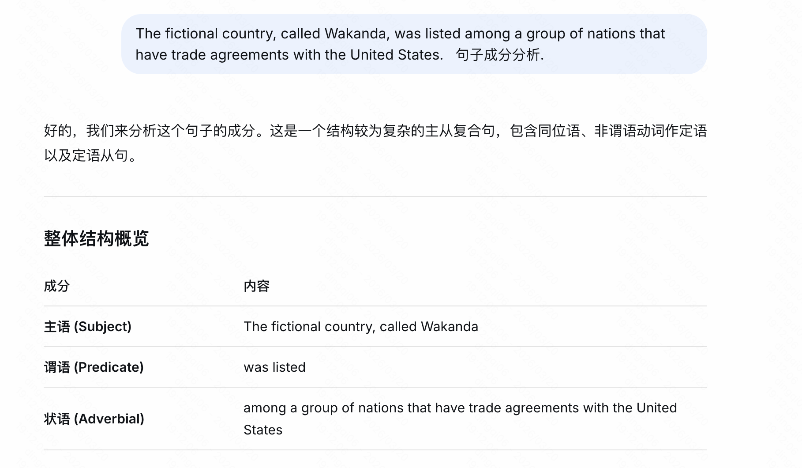
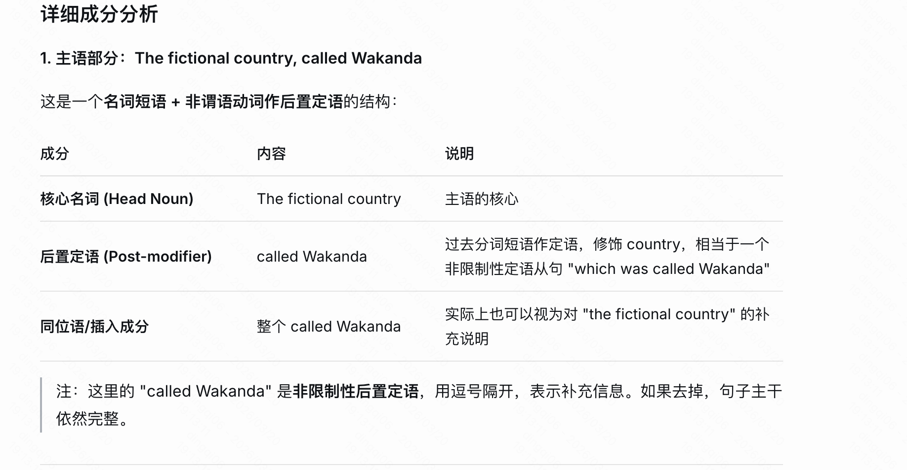
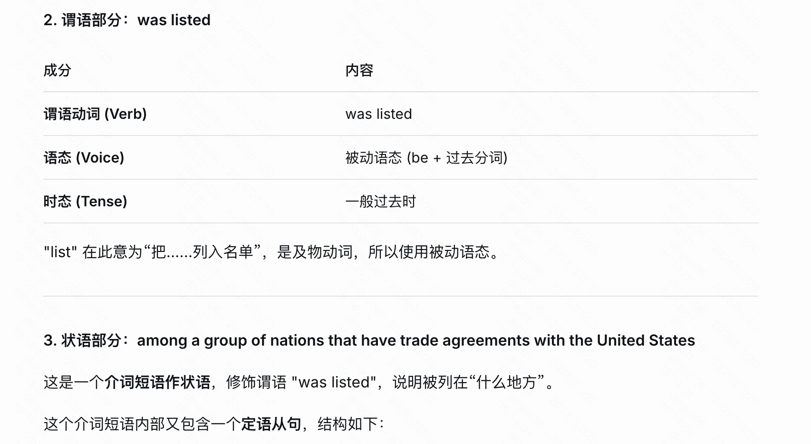
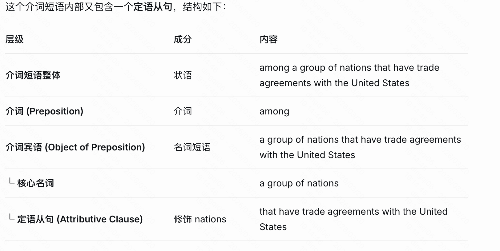
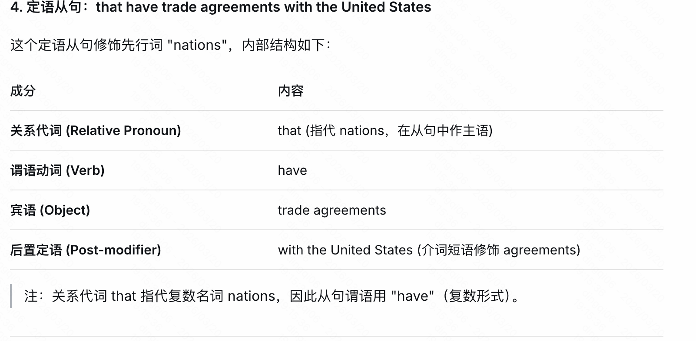
- 层级结构
The fictional country, called Wakanda, was listed among a group of nations that have trade agreements with the United States.
│
├── 主语: The fictional country, called Wakanda
│ ├── 核心名词: The fictional country
│ └── 后置定语: called Wakanda (过去分词短语)
│
├── 谓语: was listed
│
└── 状语: among a group of nations that have trade agreements with the United States (介词短语)
│
├── 介词: among
│
└── 介词宾语: a group of nations that have trade agreements with the United States
│
├── 核心名词: a group of nations
│
└── 定语从句: that have trade agreements with the United States
│
├── 关系代词: that (主语)
├── 谓语: have
├── 宾语: trade agreements
└── 后置定语: with the United States (介词短语)
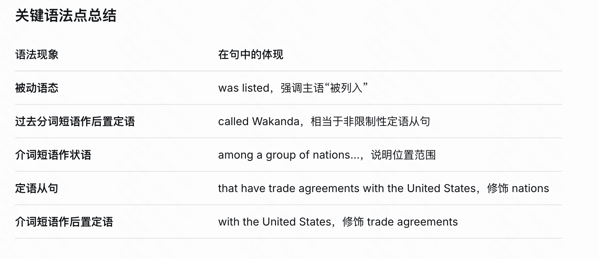
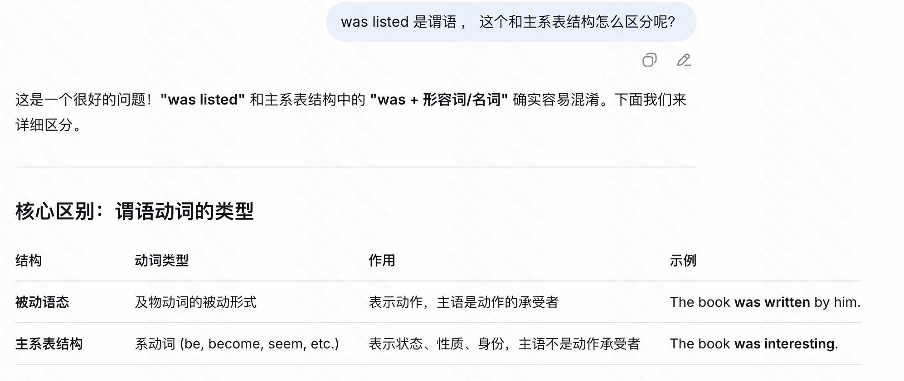
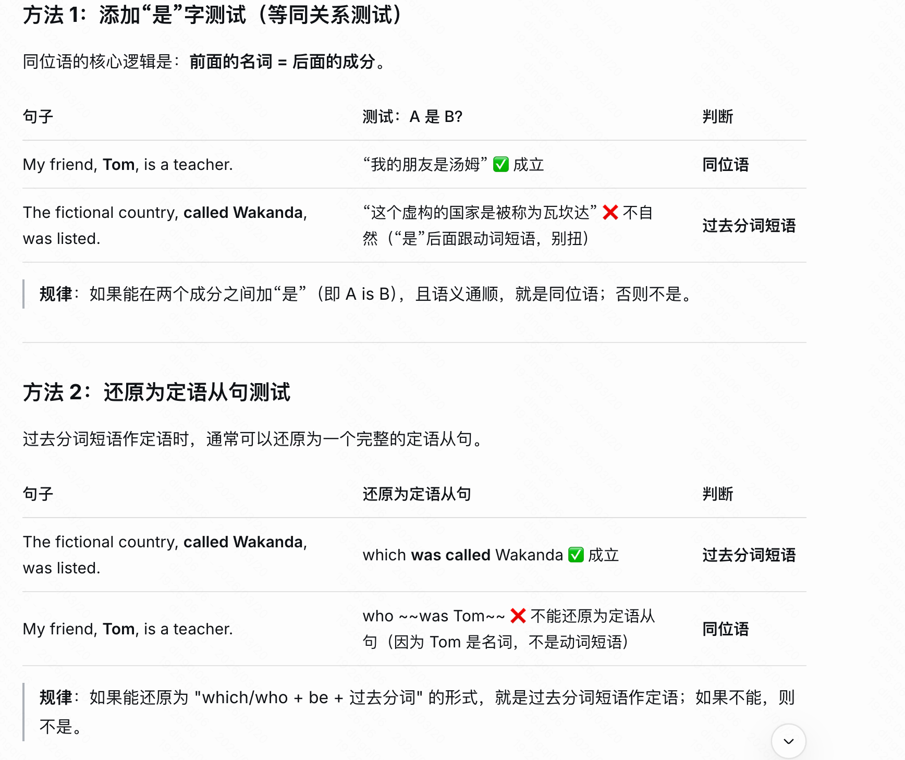
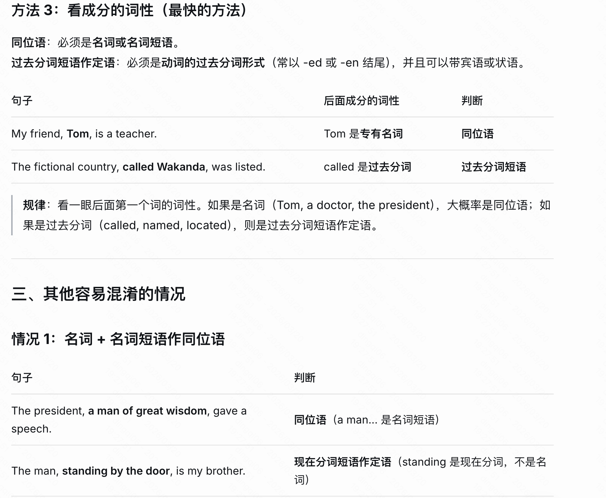
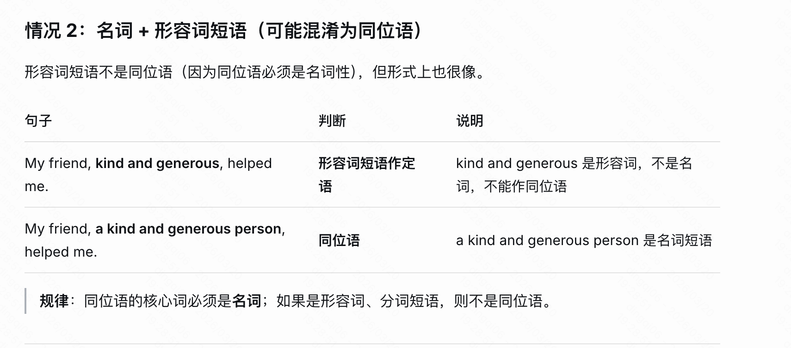
快速判断流程图
看逗号后面的第一个词
│
▼
是名词/名词短语？
│
┌───┴───┐
是 否
│ │
▼ ▼
同位语 是过去分词？
│
┌───┴───┐
是 否
│ │
▼ ▼
过去分词短语 其他（形容词短语等）
作定语
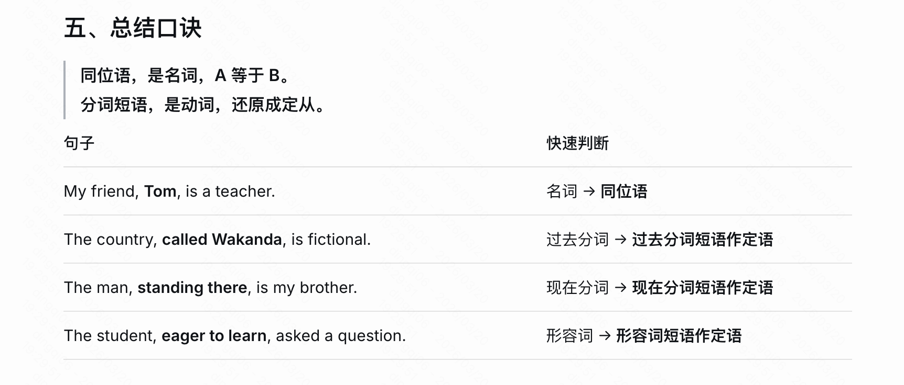
十六种时态
综合问题
1 副词的位置
1.1 修饰“实义动词”时，方式副词通常放在动词后面
在你的第二个句子里：
Bob said loudly that he was not happy.
said 是一个实义动词（表示具体的动作“说”）。
loudly 是一个方式副词，描述“说”这个动作是“大声地”进行的。
规律：当方式副词修饰一个具体的实义动词时，最自然的位置是动词之后（如果是及物动词带宾语，则通常放在动词后、宾语前，或宾语后均可，但紧接动词最常见）。
其他例子：
He walked slowly.
She ate the meal quickly.
1.2 修饰“整个句子”或“状态/频率”时，副词放在动词前面
在你的第一个句子里：
I rarely go to Tom‘s house.
rarely 是一个频率副词，它修饰的不是“去”这个动作的方式，而是说明“去”这个事件发生的频率。
这类副词（频率、确定性、评价性等）通常放在主语之后、实义动词之前。
go 是实义动词，但 rarely 并不描述“怎么去”，而是描述“多常去”。
这类常见的副词包括：
频率：always, usually, often, sometimes, rarely, never
程度：almost, hardly, nearly, quite
评价/观点：probably, certainly, definitely
其他例子：
She always arrives on time.
He probably forgot the meeting.
1.3 关键在于“语义角色”
这个迷惑的根源在于，中文里“副词”这个大类，在英语中实际上对应着语义功能完全不同的几类词：
方式副词（manner adverbs）：回答“怎么做”，紧贴动作，习惯放在动词后面（或句末）。
频率/程度/观点副词（frequency/degree/epistemic adverbs）：回答“多常”“多大程度上”“说话人怎么看待”，它们不描述动作的具体方式，而是给句子加上一个“时间框架”或“评价框架”，因此放在动词前面（或句首）。
英语底层逻辑
- 1 要把多个简单句“+”起来, 但是又要避免重复和啰嗦部分, 因此出现关联性词汇
-
- 关联性词汇包括when、where、which、that等
-
2 定语和状语都是修饰其他成分. 比如定语常用来修饰宾语, 但是定语又分短定语和长定语(短语和从句).
-
- 短定语放在被修饰对象前, 长定语放在被修饰对象后面.
-
3 重点前置
-
- 想强调什么就把什么放在句子前面.
-
- 先说主动宾，再说方地时.
关联性词汇在从句中宾语而省略.
Please understand that we cannot answer all of the questions our listeners send us
Please understand that we cannot answer all of the questions [that] our listeners send us
I like the teacher Tom is talking with.
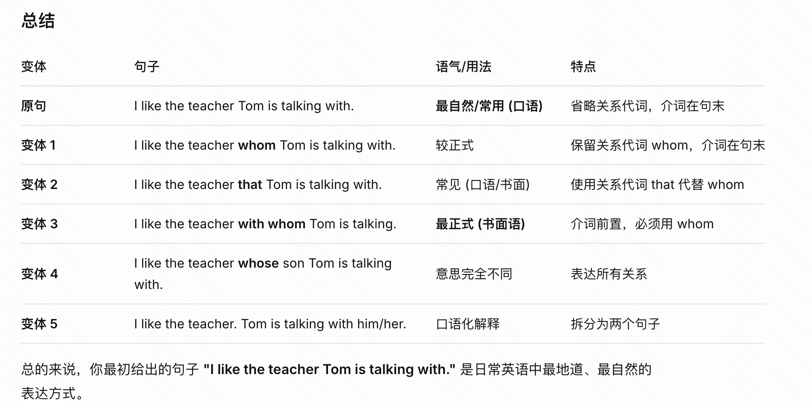